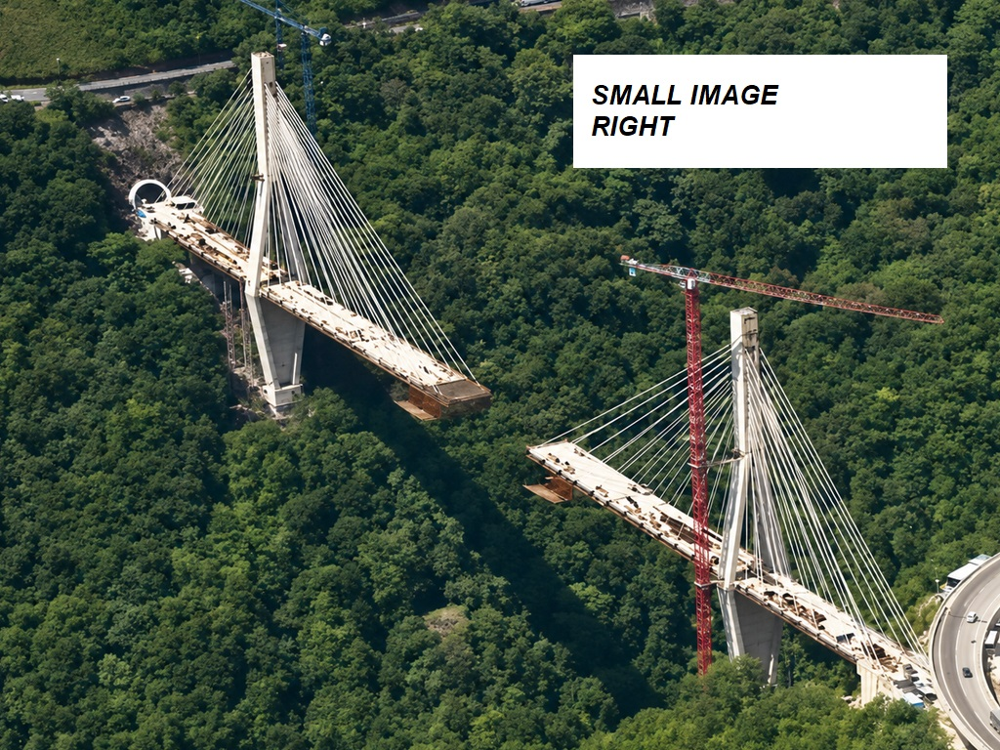
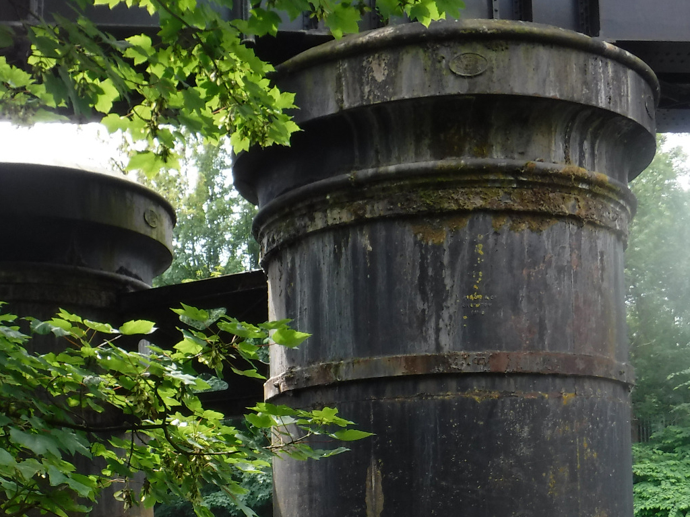
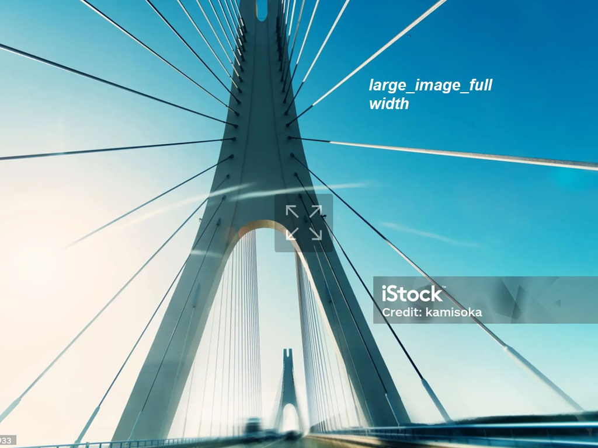
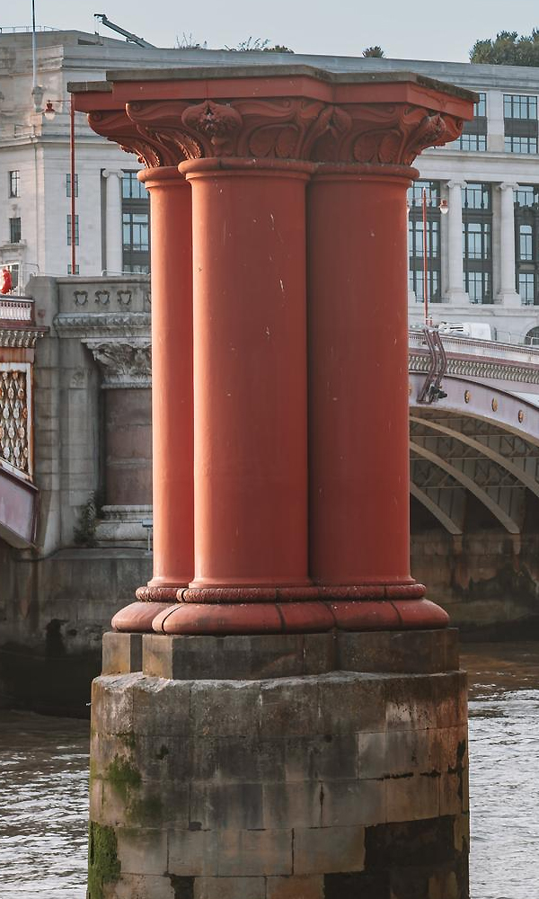

CAST IRON PIERS
Cast iron bridge piers (many over a century old) are still widely in service today in the UK.
Concerns about how corrosion affects their current and future structural safety are growing.
Many bridges were constructed with wrought iron superstructures supported on cast iron piers, the leading technology of the mid-1800s.

LONG-TERM SERVICE
More than a century later, a significant number of these bridges remain in service.
In many cases the superstructures have been replaced, but the cast iron piers themselves are original.
A key reason for their longevity is that cast iron, when left with its cast outer surface intact, offers excellent long-term durability.
While some piers exhibit vertical cracking, most show few outward signs of serious corrosion, despite protective coatings or paint systems not always being well maintained.
PRIMARY INSPECTION CONSIDERATION
The cast iron in the above study consists of iron with ~3% carbon and 1% silicon. When the iron corrodes it turns to rust and the graphite stays in place, holding the original shape. The graphite rich shell is the reference point for the depth of corrosion.
It is important to note that the graphitised layer and rust layers provide a barrier which slows the oxygen diffusion (slowing the corrosion rate).
SECONDARY INSPECTION CONSIDERATION
Piers pass through various zones which impact the rate of corrosion:
- Atmospheric zone (above high water)
- Splash zone
- Tidal zone
- Immersion zone
- Buried/soil zone

CORING OBSERVATIONS
As part of the study several cores were taken.
After retrieval, the samples were transported to the laboratory and sectioned with a bandsaw to expose both the original cast iron and the corrosion-product layers described earlier.

REMAINING WALL THICKNESS
An Australian study of Victorian cast iron bridge piers found that the pier thickness was often greater than that shown in the historical drawings. It seems the additional wall thickness was simply a conservative allowance to ensure the specified thickness was achieved, given the imprecise casting tolerances of the time.
Structurally, what matters most is how much thickness remains and, for circular piers, how evenly that thickness is spread around the pier. This affects their ability to carry vertical loads, resist bending and keep their shape stable.

“Largely the remaining average thickness of material will be that remaining after the occurrence of ‘uniform’ corrosion. Pitting corrosion usually has little influence on strength unless it is severe and extensive and causes major loss of cast iron cross section.”
PIER FILL AND FIELD INVESTIGATION
These piers were originally constructed empty but most will be filled with sand, gravel, concrete or a combination of all three. Filling the pier improves load capacity, buckling resistance and impact resistance.
In field investigations for remaining wall thickness, the removal of the graphitised layer should be restricted to the absolute minimum since it and the magnetite layer it supports have an important role in providing a protective barrier that is considered to retard the diffusion of oxygen to the corrosion interface (LaQue Citation1958). A better approach is to drill small diameter holes through the graphitised layer to the sound cast iron underneath and then to carefully measure its thickness (i.e. without external rusts and other accretions). This will provide a good estimate of loss of cast iron as a result of corrosion. If holes are drilled also through the cast iron itself, for example to ascertain the remaining wall thickness, consideration should be given to a suitable method for local repair. This is to attempt to prevent initiation of subsequent highly localised corrosion.

FUTURE CORROSION
Assessment of the feasibility and economic viability of structural life extension possibilities usually requires assessment of the corrosion to be expected in the future. Unfortunately, for cast iron, there is little in the corrosion literature that considers rates of corrosion after many years of exposure.
Short-term corrosion field testing or electrochemical laboratory corrosion testing will not be helpful as these techniques cannot replicate the important role of the graphitised layer and the magnetite in reducing the corrosion rate as corrosion progresses (cf. Figure ). One possibility is to extrapolate from existing longer term data-sets for cast iron in the environment of interest.
For example, for the bridges considered herein, some use can be made of the data and the trends for cast iron exposed in essentially unpolluted waters in the PCZ (Figure ) since these data are for natural seawater at similar annual average water temperature (28 °C). Figure shows that the rate of corrosion for cast iron decreases with increased time of exposure, at least in the period to 16 years.
It should be clear that extrapolation for long-term exposures should be based on the longer term corrosion rate. For example, it should be based on the slope of the trend at the right of Figure .

However, such coring should be limited because the graphitised zone and its magnetite layer offer some corrosion protection, and disturbance may trigger severe localised corrosion.

VARIATION AND PREDICTIVE MODELLING
In previous studies the measured corrosion losses and pit depths are observed to vary significantly both within individual bridges and between different bridges.
Using both the field data and published literature, a predictive model for long-term corrosion was developed. This enables estimation of future corrosion losses, which is essential for assessing the remaining structural life of the piers.